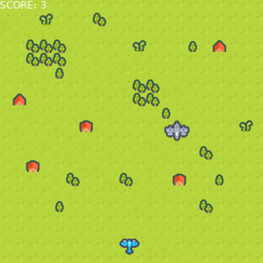
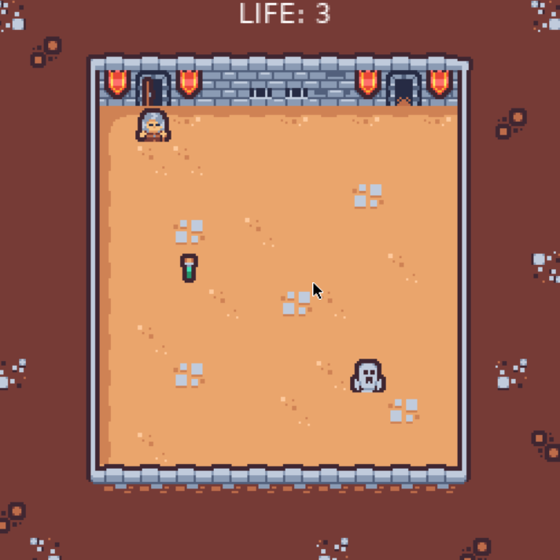

Najbliższe kursy:
Programowanie gier w Lua i LÖVE - bezpłatna lekcja (15.12.22)

Bezpłatna, dwugodzinna lekcja online, na której wspólnie stworzymy grę w stylu shoot'em up
w zaledwie 35 linijkach kodu!
Do kogo skierowany jest kurs: młodzież w wieku 12-18 lat.
Liczba miejsc: 10.
Co jest wymagane do wzięcia udziału: komputer z dostępem do Internetu.
Termin: 15 grudnia 2022, w godzinach 16:00 - 17:30.
Programowanie gier w Lua i LÖVE - kurs dwutygodniowy

Dwutygodniowy kurs programowania od podstaw (online). Najpierw uczniowie poznają podstawy programowania w języku Lua, a następnie dowiedzą się, jak wykorzystać zdobytą wiedzę w celu stworzenia gry
typu roguelike
, w silniku LÖVE.
Kurs trwa dwa tygodnie, zajęcia odbywają się od poniedziałku do piątku w godzinach 16:00 - 17:30.
Do kogo skierowany jest kurs: młodzież w wieku 12-18 lat.
Liczba miejsc: 10.
Co jest wymagane do wzięcia udziału: komputer z dostępem do Internetu.
Termin zostanie ogłoszony w najbliższym czasie.
Nasi mistrzowie (nauczyciele):

Maciej Wróblewski - programuje od 12. roku życia, w zawodzie programisty pracuje od 2013 roku. Pracował przy produkcji gier mobilnych, aplikacji i serwisów internetowych. Lider zespołów i trener młodszych programistów.

Kacper Dębowski - programista z wieloletnim doświadczeniem w takich branżach jak gamedev i fintech. Haker. Doświadczony nauczyciel programowania dla dzieci i młodzieży.